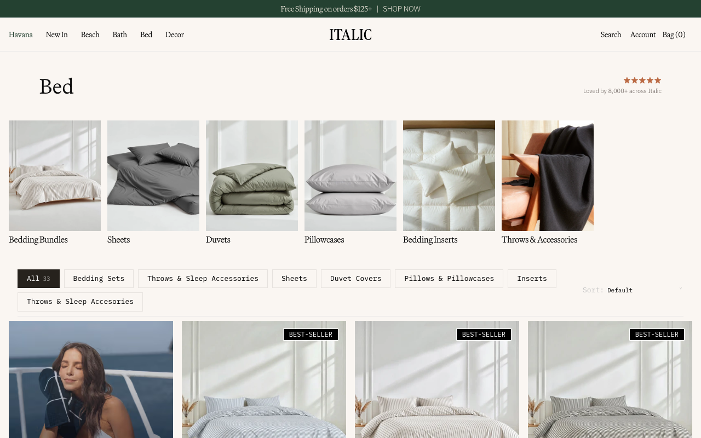
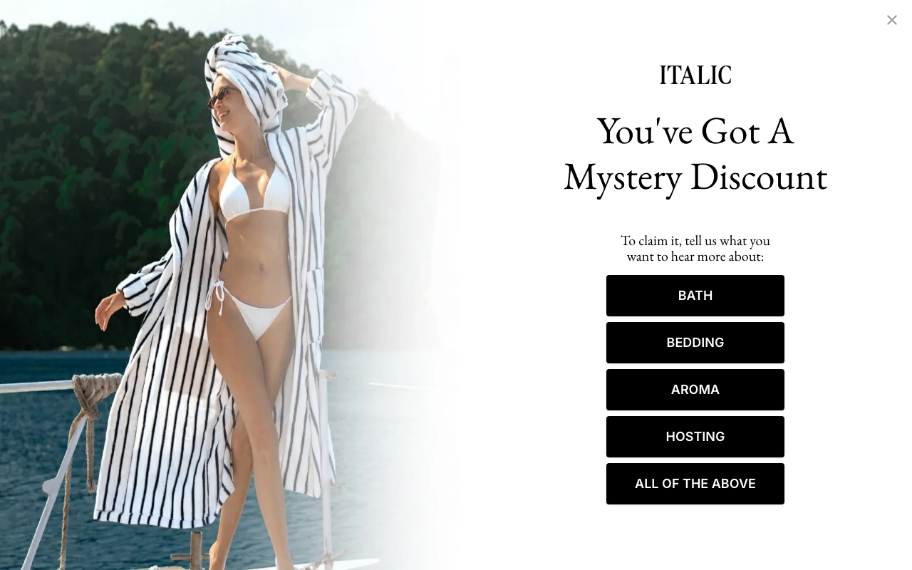
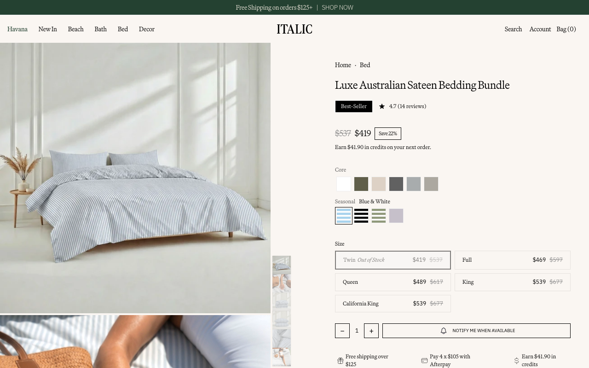
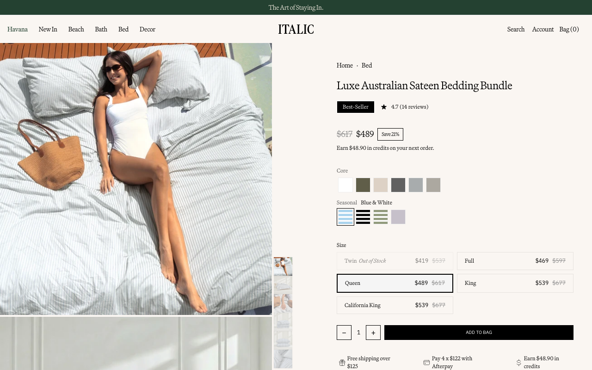
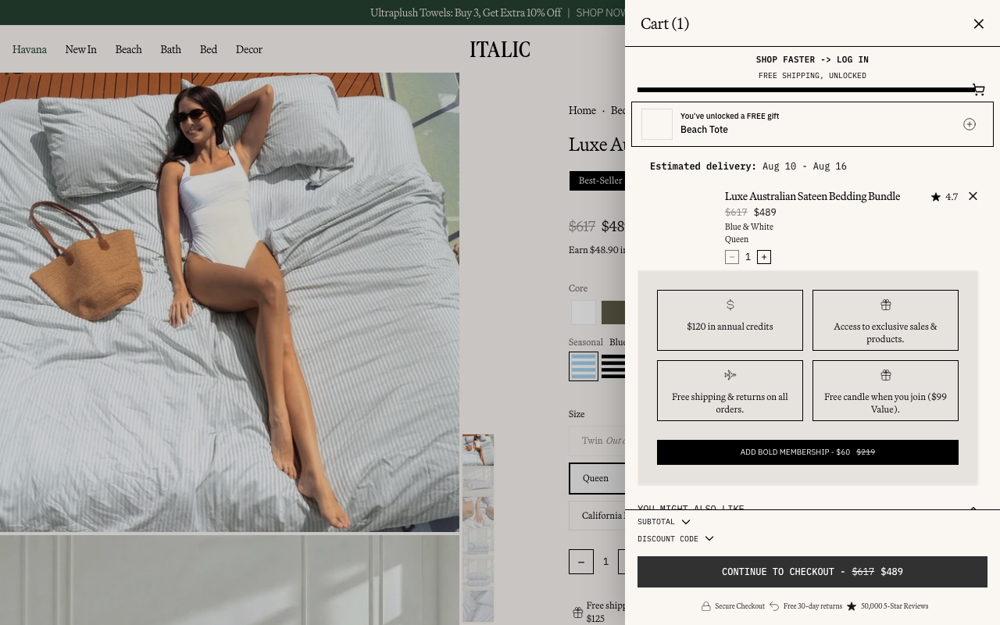

Think aloud: I'm checking out Italic for some quality home basics. Let's start by browsing the Bed category.
URL/context: https://www.italic.com/
Think aloud: I clicked on Bed, but it looks like I'm still on the homepage hero. Let me try clicking Bed again to head to the bedding category.
URL/context: https://www.italic.com/

Think aloud: I am on the Bed category page now. I'll open the Luxe Australian Sateen Bedding Bundle to check out its details and pricing.
URL/context: https://www.italic.com/collections/home-bedding

Think aloud: A discount popup appeared over the bedding bundle page. I'll press Escape to close it so I can look at the sizes and options.
URL/context: https://www.italic.com/products/luxe-australian-sateen-bedding-bundle?Color=Blue+%26+White&Size=Twin

Think aloud: The Twin size is currently out of stock, so I'll select Queen instead to see if I can add this bundle to my bag.
URL/context: https://www.italic.com/products/luxe-australian-sateen-bedding-bundle?Color=Blue+%26+White&Size=Twin

Think aloud: I selected the Queen size. Now let's add this bedding bundle to the bag and see what checkout looks like.
URL/context: https://www.italic.com/products/luxe-australian-sateen-bedding-bundle?Color=Blue+%26+White&Size=Queen

Think aloud: The selected product control would start a paid or trial step, so I am stopping before selecting it.
URL/context: https://www.italic.com/products/luxe-australian-sateen-bedding-bundle?Color=Blue+%26+White&Size=Queen